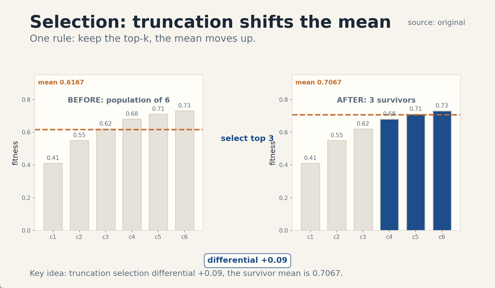
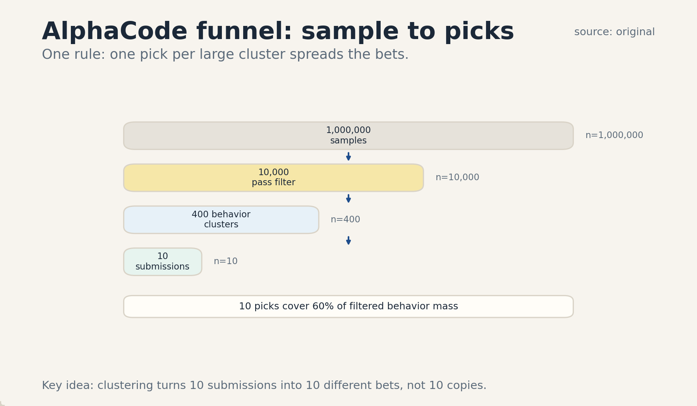
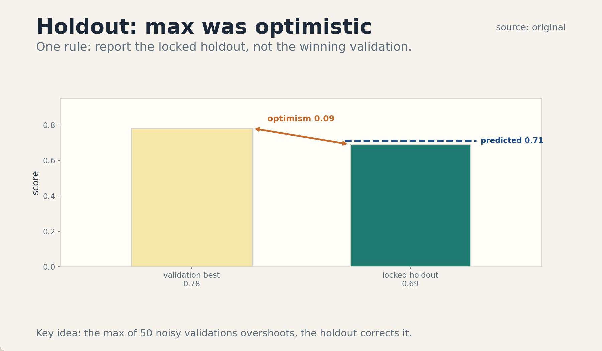

U04 · Open-ended evolution and deep research
U04 , Open-ended evolution and deep research
Course: Stanford CS329A, Autumn 2025. Official sessions 7 (Oct 13), 8 (Oct 17), and 9 (Oct 20, guest: Melvin Johnson, Google DeepMind, “Evolution of Post-training from Chatbots to Agents”, schedule line only). Baseline: 2026-10-07.
Claim class: mechanisms are taught from the requested inventory with SOURCE
ATTRIBUTION PENDING. Paper titles come from the verified official schedule
(see ../source_manifest.md). No paper contents were individually inspected
by this builder. Guest session 9 is taught at schedule-line level only, per
the honesty note. Toy numbers are computed and traceable.
Unit objectives
After this unit the learner can: run one evolutionary loop over agent designs, define mutation and selection operators, read AI Scientist and AlphaEvolve at mechanism level, describe AlphaCode’s sample-filter-cluster pipeline, use search inside reasoning, keep evidence provenance, enforce holdout separation, budget an evolution run, judge novelty claims, and write sandbox rules for safe iteration.
Dependencies
P20 (tools, APIs, agent state), P22 (experimental method). Local
remediation is inside C08, C09, and C12. The shared bridges live at
../shared/prerequisites/.
Four-way link used in this unit
Intuition: evolution keeps what works and varies it. Equation: selection pressure = fitness gap times keep fraction, expected survivors = M * k. Code: a loop of mutate, evaluate, select. Observation: fitness rises fast then plateaus, and the holdout tells whether the rise is real.
C01 agent architecture search
1. Source mapping, scope, objectives, dependencies. Session 7, Open-Ended Evolution of Self-Improving Agents. Reading pointer: Automated design of agentic systems (ADAS) (SOURCE ATTRIBUTION PENDING). Scope: search over agent designs (prompts, tool sets, control flow) instead of hand-designing them. Objective: define the design space and run one search round on a toy. Dependencies: P20, P22.
2. Motivating question and tiny toy. Question: which agent design solves the task best: ReAct, plan-then- execute, or self-consistency over tools? Toy: design space of 3 designs. Validation scores: ReAct 0.62, plan-then-execute 0.55, self-consistency 0.71. Search picks self-consistency.
3. Plain-language mental model. Stop hand-carving each agent. Define the workshop (the design space), the ruler (the fitness function), and let search carve. The designer moves up one level: from the agent to the search that finds agents.
4. Variables, units, shapes, assumptions. Design d: (prompt template, tool set, control flow, budget). Fitness f(d): validation success rate. Search: propose designs, evaluate, keep the best. Assumptions: fitness is measurable, the design space is enumerable or samplable, evaluation is affordable.
5. Justified derivation or mechanism. This is black-box optimization over programs. The mechanism is the same as hyperparameter search, lifted to agent structure: the search needs no gradients, only a fitness function. It works when the fitness signal is honest (C09) and the space contains good designs.
6. Computed numerical example using the same objects. Toy: 12 designs evaluated, each on 50 validation tasks. Scores range 0.41 to 0.73. Top-3: 0.73, 0.70, 0.68. Selection keeps the top 3 as parents for the next round. Cost: 12 * 50 = 600 task runs. The search budget is the dominant cost, the design space size sets it.
7. Algorithm and original minimal implementation.
def architecture_search_round(designs, fitness_fn):
scored = [(d, fitness_fn(d)) for d in designs]
scored.sort(key=lambda t: t[1], reverse=True)
return scored
8. Correctness checks and expected output. Check: the returned list is sorted descending by fitness. Check: the item-2 toy returns self-consistency first at 0.71.
9. Complexity, memory, statistical efficiency, stability, practical costs. O(designs * eval_cost). Evaluation dominates. Stability: noisy fitness (50 tasks) can misrank close designs, report standard errors with the ranking.
10. Nearest alternatives and precise selection boundaries. Hand design: pick when the designer knows the task well. Random search: pick as the baseline every smarter search must beat. Evolutionary search: pick when good designs combine well (C02, C03).
11. Failure case, broken assumption, counterexample. Break fitness honesty: the validation tasks leak into the design proposals (designs tuned to the validation set). The search then overfits and the winner fails on new tasks. Counterexample: a design space of one: search with no variation is just evaluation.
12. Research reading and falsifiable extension. Reading: ADAS (SOURCE ATTRIBUTION PENDING). Extension: hypothesis: searched designs beat hand-designed ones on held-out tasks. Falsification: equal scores, which would mean the search found nothing the designer missed.
13. Breadth recall, deep oral ladder, unfamiliar transfer. Recall: define the design triple and the fitness. Ladder: define the space, run the toy, justify black-box search, code the round, state evaluation cost, compare with hand design, debug the leak failure, critique fitness honesty, design the held-out test. Transfer: neural architecture search is the same loop over networks.
14. Lab/exercises with answers separated.
E1.1: compute the search cost for 20 designs on 100 tasks each.
E1.2: explain why the designer moves up one level. E1.3: name the
leak failure. Answers: ../keys/u04_answers.md.
15. Visual units, provenance, accessibility, audit rows.
Table plate in the lesson (item 6: design, score, rank). No separate
PNG. Logged in ../visual_audit.md.
C02 candidate mutation
1. Source mapping, scope, objectives, dependencies. Session 7. Scope: the variation operator: how one agent design becomes a slightly different one. Objective: define three mutation types and apply each to a toy design. Dependencies: C01.
2. Motivating question and tiny toy. Question: the parent is a ReAct agent. What are its children? Toy parent: {prompt: “think then act”, tools: [calc], flow: react}. Mutations: M1 prompt edit: “think step by step, then act”. M2 tool add: [calc, search]. M3 flow change: react -> plan-then-execute. Three children, one edit each.
3. Plain-language mental model. Mutation is a small, random edit. One edit per child keeps the change attributable: if the child is better, you know which edit did it. Many edits at once make orphans: better, but nobody knows why.
4. Variables, units, shapes, assumptions. Mutation m(d): stochastic edit of design d. Edit distance: number of changed fields. Assumptions: small edits usually cause small fitness changes (locality), the edit set covers useful variations.
5. Justified derivation or mechanism. Locality is what makes evolution better than random search: children of good parents are usually decent, so selection compounds gains. Without locality, every child is a fresh random draw and the loop is random search with extra steps. The mechanism needs the design space to be smooth enough that one edit rarely breaks everything.
6. Computed numerical example using the same objects. Toy: parent fitness 0.62. Children fitnesses: M1 0.65, M2 0.71, M3 0.58. Best child M2 (+0.09). Edit-distance-1 children spread: 0.58 to 0.71, range 0.13. A random design from the space scores 0.41 to 0.73 (range 0.32, from C01). The children’s range is narrower: locality holds on the toy.
7. Algorithm and original minimal implementation.
import random
def mutate(design, rng):
child = dict(design)
field = rng.choice(["prompt", "tools", "flow"])
if field == "prompt":
child["prompt"] = design["prompt"] + " Be careful."
elif field == "tools":
child["tools"] = design["tools"] + ["search"]
else:
child["flow"] = "plan-then-execute"
return child
8. Correctness checks and expected output. Check: the child differs from the parent in exactly one field. Check: the parent dict is not modified (copy, not alias).
9. Complexity, memory, statistical efficiency, stability, practical costs. O(1) per child. The cost is evaluation, not mutation. Stability: the mutation distribution is a hyperparameter, too-wild mutations waste evaluations.
10. Nearest alternatives and precise selection boundaries. Crossover (combine two parents): pick when designs have composable parts. Pure mutation: pick when the representation is simple. LLM- proposed edits: pick when edits need semantic sense.
11. Failure case, broken assumption, counterexample. Break locality: one prompt edit flips the agent from helpful to refusing everything. Fitness falls off a cliff: 0.62 -> 0.05. Counterexample: a mutation that changes the tool schema without updating the prompt, the child errors on every call.
12. Research reading and falsifiable extension. Reading: evolutionary methods via ADAS (SOURCE ATTRIBUTION PENDING). Extension: hypothesis: edit-distance-1 children have narrower fitness spread than random designs. Falsification: equal spreads, which would mean the space has no locality and evolution cannot beat random search.
13. Breadth recall, deep oral ladder, unfamiliar transfer. Recall: define mutation and the locality claim. Ladder: define the edit, run the toy, justify locality, code mutate, state O(1) cost, compare with crossover, debug the cliff failure, critique locality, design the spread test. Transfer: point mutations in DNA are the same operator.
14. Lab/exercises with answers separated.
E2.1: list the three children of the toy parent. E2.2: explain the
orphan problem in two sentences. E2.3: state the locality test.
Answers: ../keys/u04_answers.md.
15. Visual units, provenance, accessibility, audit rows.
Table plate in the lesson (item 6: child, edit, fitness). No separate
PNG. Logged in ../visual_audit.md.
C03 selection
1. Source mapping, scope, objectives, dependencies. Session 7. Scope: who survives to the next generation: truncation, tournament, fitness-proportionate. Objective: run all three on a toy population and compare survivors. Dependencies: C01, C02, P07.
2. Motivating question and tiny toy. Question: 6 candidates, fitnesses [0.41, 0.55, 0.62, 0.68, 0.71, 0.73]. Keep 3. Who survives under each rule? Toy answers: truncation: [0.73, 0.71, 0.68]. Tournament (pairs, winner advances): depends on the draw, one possible outcome [0.73, 0.68, 0.62]. Proportionate: any 3 with probability weighted by fitness.
3. Plain-language mental model. Selection is the admissions office. Truncation takes the top GPAs. Tournament runs playoffs. Proportionate runs a lottery with weighted tickets. All three prefer the fit, they differ in how much luck they allow.
4. Variables, units, shapes, assumptions. Population size M, keep count k, fitness f_i. Truncation: top-k. Tournament: random pairs, winner survives. Proportionate: P(survive) ~ f_i / sum(f). Assumptions: fitness is measured on the same data for all, higher fitness is better.
5. Justified derivation or mechanism. Selection pressure is the knob: strong pressure (truncation, k small) converges fast but can strand on a local optimum. Weak pressure (proportionate) explores longer but wastes evaluations. The mechanism is survival of the measured: the population’s fitness distribution shifts up each generation by the selection differential.
6. Computed numerical example using the same objects. Toy: M = 6, fitnesses as in item 2. Mean fitness: (0.41 + 0.55 + 0.62 + 0.68 + 0.71 + 0.73) / 6 = 3.70 / 6 = 0.61667. Truncation keep 3: survivor mean = (0.73 + 0.71 + 0.68) / 3 = 2.12 / 3 = 0.70667. Selection differential: 0.70667 - 0.61667 = 0.09. Proportionate keep 3 (expected): expected survivor mean = sum(f_i^2)/sum(f_i) = (0.1681 + 0.3025 + 0.3844 + 0.4624 + 0.5041 + 0.5329) / 3.70 = 2.3544 / 3.70 = 0.63632. Differential: 0.01965. Truncation pushes harder.
7. Algorithm and original minimal implementation.
import random
def truncation(population, k):
ranked = sorted(population, key=lambda c: c["fitness"],
reverse=True)
return ranked[:k]
def tournament(population, k, rng):
survivors = []
pool = list(population)
rng.shuffle(pool)
for i in range(0, len(pool) - 1, 2):
a, b = pool[i], pool[i + 1]
survivors.append(a if a["fitness"] >= b["fitness"] else b)
if len(survivors) == k:
break
return survivors
8. Correctness checks and expected output. Check: truncation on the item-2 population with k = 3 returns the 0.73, 0.71, 0.68 candidates in order. Check: tournament returns k survivors.
9. Complexity, memory, statistical efficiency, stability, practical costs. O(M log M) for truncation sort, O(M) for tournament. The cost is fitness evaluation, not the selection rule. Stability: noisy fitness makes truncation keep lucky candidates, tournaments are gentler.
10. Nearest alternatives and precise selection boundaries. Truncation: pick when fitness is reliable and speed matters. Tournament: pick when fitness is noisy. Proportionate: pick when diversity matters most.
11. Failure case, broken assumption, counterexample. Break fitness reliability: one candidate got lucky on its 50 tasks (true 0.55, measured 0.73). Truncation keeps it, its children inherit nothing real. Counterexample: premature convergence: truncation keeps 3 near-identical designs and the search stalls.
12. Research reading and falsifiable extension. Reading: selection methods via evolutionary literature (SOURCE ATTRIBUTION PENDING for course-specific treatment). Extension: hypothesis: tournament beats truncation under noisy fitness at matched evaluation budget. Falsification: equal final fitness, which would mean the noise does not bite at that sample size.
13. Breadth recall, deep oral ladder, unfamiliar transfer. Recall: name the three rules and the differential numbers. Ladder: define pressure, run the toy, justify the differential, code both rules, state O(M log M), compare the three, debug the lucky-candidate failure, critique fitness reliability, design the noisy-fitness test. Transfer: university admissions uses the same three shapes.
14. Lab/exercises with answers separated.
E3.1: recompute the truncation differential for keep 2. E3.2:
explain premature convergence in two sentences. E3.3: state when
tournaments beat truncation. Answers: ../keys/u04_answers.md.
15. Visual units, provenance, accessibility, audit rows.
Figure ../visuals/u04_fig01.png: fitness distribution before and
after truncation selection: 6 bars (population) then 3 highlighted
survivor bars, mean lines at 0.6167 and 0.7067, differential arrow
labeled +0.09. Provenance: original, computed from item 6. Alt text:
two bar groups showing the upward shift of the mean. Audit: means and
differential match item 6.

C04 AI Scientist/AlphaEvolve readings
1. Source mapping, scope, objectives, dependencies. Session 7. Reading pointers: Lu et al. 2024, The AI Scientist, the AlphaEvolve report (SOURCE ATTRIBUTION PENDING). Scope: two worked examples of open-ended machine research: idea generation plus experimental verification (AI Scientist), and evolutionary code improvement (AlphaEvolve). Reading concept: mechanisms taught, paper contents not claimed. Objective: write the loop of each in pseudocode. Dependencies: C01-C03, P22.
2. Motivating question and tiny toy. Question: what does “automated science” actually do each hour? Toy AI Scientist loop: propose idea -> write code -> run experiment -> write up results -> review the writeup -> keep or discard. Toy AlphaEvolve loop: propose code edit -> run tests -> keep if better -> repeat.
3. Plain-language mental model. AI Scientist: a graduate student that never sleeps: ideas, code, experiments, papers, peer review, all in a loop. AlphaEvolve: a programmer that never stops refactoring: every edit is tested, only improvements survive.
4. Variables, units, shapes, assumptions. AI Scientist: idea pool, experiment budget, review score threshold. AlphaEvolve: program population, test suite, fitness = score on tests. Assumptions: experiments run automatically, the review or tests judge correctly, compute budget is finite.
5. Justified derivation or mechanism. Both are generate-and-test at research scale. AI Scientist adds the writeup and review steps: the artifact is a claim plus evidence. AlphaEvolve adds evolution: the artifact is better code. The shared mechanism is automated empirical feedback (U02 C02) closing the loop without a human in the middle.
6. Computed numerical example using the same objects. Toy AI Scientist week: 20 ideas proposed, 12 run successfully, 8 produce writeups, 3 pass review. Yield: 3/20 = 0.15 papers per idea. Toy AlphaEvolve run: 500 edits proposed, 80 pass tests, 12 improve on the best, final best 8 percent better than seed. Yield: 12/500 = 0.024 improvements per edit. Both funnels are wide at the top.
7. Algorithm and original minimal implementation.
def ai_scientist_loop(ideas, budget):
papers = []
for idea in ideas:
if budget <= 0:
break
result = run_experiment(idea)
budget -= 1
writeup = write_up(idea, result)
if review(writeup) >= 7.0:
papers.append(writeup)
return papers
def alphaevolve_loop(seed, edits, tests):
best, best_score = seed, score(seed, tests)
for edit in edits:
candidate = apply_edit(best, edit)
s = score(candidate, tests)
if s > best_score:
best, best_score = candidate, s
return best, best_score
8. Correctness checks and expected output. Check: ai_scientist_loop stops when the budget hits 0. Check: alphaevolve_loop never returns a program worse than the seed.
9. Complexity, memory, statistical efficiency, stability, practical costs. Cost: experiments or test runs dominate. The review step is the quality gate, without it the loop publishes noise.
10. Nearest alternatives and precise selection boundaries. Human-led research: pick when judgment is the bottleneck. AI Scientist-style loops: pick when experiments are automatable. AlphaEvolve-style loops: pick when the artifact is code with tests.
11. Failure case, broken assumption, counterexample. Break experiment automation: the experiment needs a human to set up each run. The loop stalls at the first idea. Counterexample: a review step that approves everything, the loop then mass-produces confident nonsense (see C11 novelty claims).
12. Research reading and falsifiable extension. Reading: Lu et al. 2024, the AlphaEvolve report (SOURCE ATTRIBUTION PENDING). Extension: hypothesis: reviewed writeups from the loop match human-written ones on a blind quality rubric. Falsification: a persistent gap, which would locate what the loop cannot do.
13. Breadth recall, deep oral ladder, unfamiliar transfer. Recall: name the loop steps of each. Ladder: define the artifact, run the toy yields, justify generate-and-test, code both loops, state experiment cost, compare the two, debug the stalled-experiment failure, critique the review assumption, design the blind-rubric test. Transfer: a newsroom (report, edit, publish) is the human version.
14. Lab/exercises with answers separated.
E4.1: compute the paper yield for 40 ideas with the toy rates.
E4.2: explain the funnel shape in two sentences. E4.3: name the
approve-everything failure. Answers: ../keys/u04_answers.md.
15. Visual units, provenance, accessibility, audit rows.
Table plate in the lesson (item 6: stage, count, yield). No separate
PNG. Logged in ../visual_audit.md.
C05 code-generation search
1. Source mapping, scope, objectives, dependencies. Sessions 7-8. Scope: search over generated programs with test-based selection: sample many, run tests, keep winners. Objective: compute a sample-filter-keep count on a toy. Dependencies: C01, U02 C03.
2. Motivating question and tiny toy. Question: the model writes 100 programs for one task. How many survive the tests? Toy: 100 samples. 40 compile. 25 pass the visible tests. Keep the 25, the best by hidden tests is the answer.
3. Plain-language mental model. Flood the zone with drafts. The tests are the dam. Only the strong swimmers get through. The search is the flood, the tests are the selection.
4. Variables, units, shapes, assumptions. N samples, compile rate c, visible-pass rate v. Survivors: N * c * v. Assumptions: tests run fast, the visible tests predict the hidden ones well enough.
5. Justified derivation or mechanism. This is rejection sampling over programs (U03 C06) with compilation and tests as the filter. The mechanism works when the filter is cheap and strict: cheap because N is large, strict because survivors must be good. The hidden tests are the final judge (U02 C12).
6. Computed numerical example using the same objects. Toy: N = 1000, c = 0.6, v = 0.3. Survivors: 1000 * 0.6 * 0.3 = 180. Hidden-test pass among survivors: 0.5, so about 90 truly good programs. Yield: 90/1000 = 0.09. The funnel: 1000 -> 600 -> 180 -> 90.
7. Algorithm and original minimal implementation.
def code_search(generate, compile_ok, visible_tests, n):
survivors = []
for _ in range(n):
prog = generate()
if not compile_ok(prog):
continue
if all(t(prog) for t in visible_tests):
survivors.append(prog)
return survivors
8. Correctness checks and expected output. Check: with scripted rates c = 0.6, v = 0.3, n = 1000, survivors print about 180. Check: empty test list keeps every compiling program.
9. Complexity, memory, statistical efficiency, stability, practical costs. O(N) generations plus O(N) test runs. Test speed is the bottleneck. slow tests cap N. Memory: store survivors only, not all N.
10. Nearest alternatives and precise selection boundaries. Single careful generation: pick when N is unaffordable. Search: pick when tests are fast and the task is hard. Human-written code: pick when the spec is ambiguous.
11. Failure case, broken assumption, counterexample. Break the visible-hidden link: the visible tests are trivial and the hidden tests are hard. Survivors pass visible at 0.3 but hidden at 0.02. The search optimizes the wrong filter. Counterexample: a program that passes visible tests by hardcoding their inputs.
12. Research reading and falsifiable extension. Reading: code-generation search via the session-8 papers (SOURCE ATTRIBUTION PENDING). Extension: hypothesis: survivor count predicts hidden-test success rate. Falsification: no correlation, which would mean the visible filter carries no signal.
13. Breadth recall, deep oral ladder, unfamiliar transfer. Recall: state the funnel numbers. Ladder: define the filter, run the toy, justify rejection sampling, code the search, state test-speed cost, compare with single generation, debug the trivial-visible-test failure, critique the filter link, design the correlation test. Transfer: panning for gold uses the same funnel.
14. Lab/exercises with answers separated.
E5.1: compute survivors for N = 500, c = 0.5, v = 0.4. E5.2: explain
the funnel in two sentences. E5.3: name the hardcoding failure.
Answers: ../keys/u04_answers.md.
15. Visual units, provenance, accessibility, audit rows.
Table plate in the lesson (item 6: stage, count, rate). No separate
PNG. Logged in ../visual_audit.md.
C06 AlphaCode/AlphaCode2
1. Source mapping, scope, objectives, dependencies. Session 8, Self improvement with Search and Deep Research Agents. Reading pointers: Competition-Level Code Generation with AlphaCode. AlphaCode 2 Technical Report (SOURCE ATTRIBUTION PENDING). Scope: the sample-filter-cluster pipeline for competition programming. Reading concept: mechanisms taught, paper contents not claimed. Objective: run a toy cluster-and-pick count. Dependencies: C05.
2. Motivating question and tiny toy. Question: a million samples, ten submissions allowed. How do you pick ten? Toy: 1,000,000 samples -> 10,000 pass the example tests -> cluster by behavior on new inputs -> pick one per large cluster -> submit 10.
3. Plain-language mental model. Sample an ocean. Filter to a lake. Cluster the lake into ponds of programs that behave alike. Fish one from each big pond. Diversity of submissions beats ten copies of the same guess.
4. Variables, units, shapes, assumptions. N samples, example-test filter, behavior clustering on generated inputs, submission budget S. Assumptions: example tests filter well. behavioral clusters group truly equivalent programs, the submission budget is small.
5. Justified derivation or mechanism. Clustering solves the diversity problem: without it, the top-10 by score are near-duplicates and waste the submission budget on one bet. Behavioral clustering (same outputs on new inputs) groups programs by what they do, not how they look. One pick per cluster spreads the S submissions over S different behaviors.
6. Computed numerical example using the same objects. Toy: 10,000 filtered programs form 400 behavior clusters. Cluster sizes: top 10 clusters hold 6,000 programs, the rest are small. Pick the largest program-count cluster representative from each of the top 10 clusters: 10 submissions covering 6,000 of 10,000 programs’ behavior. Coverage: 60 percent of the filtered mass with 10 picks.
7. Algorithm and original minimal implementation.
def cluster_pick(programs, behavior_key, s):
clusters = {}
for p in programs:
key = behavior_key(p)
clusters.setdefault(key, []).append(p)
ranked = sorted(clusters.values(), key=len, reverse=True)
return [c[0] for c in ranked[:s]]
8. Correctness checks and expected output. Check: with s = 10 and 400 clusters, returns 10 programs from the 10 largest clusters. Check: programs in one cluster share the behavior key.
9. Complexity, memory, statistical efficiency, stability, practical costs. O(N) generations dominate. Clustering needs the behavior key per program: one extra execution batch. The submission budget S is the scarce resource the whole pipeline serves.
10. Nearest alternatives and precise selection boundaries. Top-S by score: pick when submissions are many or programs are diverse already. Cluster-then-pick: pick when S is tiny and programs cluster. Single best: pick when only one submission exists.
11. Failure case, broken assumption, counterexample. Break the behavior key: the generated inputs miss the discriminating case, so two different algorithms land in one cluster. The pick covers one behavior while claiming two. Counterexample: all 10,000 programs in one cluster: clustering adds nothing.
12. Research reading and falsifiable extension. Reading: the AlphaCode papers (SOURCE ATTRIBUTION PENDING). Extension: hypothesis: cluster-then-pick beats top-S-pick at fixed S. Falsification: equal solve rates, which would mean the programs were diverse enough already.
13. Breadth recall, deep oral ladder, unfamiliar transfer. Recall: name the four pipeline stages. Ladder: define the cluster, run the toy, justify diversity, code the pick, state generation cost, compare with top-S, debug the weak-key failure, critique the cluster assumption, design the solve-rate test. Transfer: a fund manager diversifying across uncorrelated bets.
14. Lab/exercises with answers separated.
E6.1: compute the coverage for top 5 clusters holding 4,000 of
10,000. E6.2: explain the near-duplicate waste in two sentences.
E6.3: name the weak-key failure. Answers: ../keys/u04_answers.md.
15. Visual units, provenance, accessibility, audit rows.
Figure ../visuals/u04_fig03.png: the pipeline funnel: 1,000,000
samples -> 10,000 filtered -> 400 clusters -> 10 submissions, with the
coverage bar (60 percent) at the pick stage. Provenance: original,
values from items 2 and 6. Alt text: four-stage funnel with counts.
Audit: counts match items 2 and 6.

C07 search-enhanced reasoning
1. Source mapping, scope, objectives, dependencies. Session 8. Reading pointer: Search-o1: Agentic Search-Enhanced Large Reasoning Models (SOURCE ATTRIBUTION PENDING). Scope: interleave retrieval/search with reasoning: the model searches when its reasoning needs facts. Reading concept: mechanisms taught, paper contents not claimed. Objective: write a toy reason-search loop. Dependencies: U03 C01, P19 is not bridged, retrieval is treated as a tool, taught locally.
2. Motivating question and tiny toy. Question: the reasoning hits “the population of X in 2020”. What happens next? Toy: reasoner emits SEARCH(“population of X 2020”), retriever returns “1.2M”, reasoner continues with the number in context.
3. Plain-language mental model. Reason until you hit a fact you do not know. Look it up. Reason on. The search is a memory the model does not have to carry: external, fresh, citable.
4. Variables, units, shapes, assumptions. Reasoning trace with SEARCH actions, retrieval returns (snippet, source). Assumptions: the retriever returns relevant facts, the reasoner uses them instead of its priors, sources are recorded.
5. Justified derivation or mechanism. The mechanism splits knowledge from reasoning: parameters hold patterns, retrieval holds facts. Search-enhanced reasoning works when the question needs fresh or long-tail facts the parameters lack. The risk is retrieval error compounding: a wrong snippet poisons the rest of the trace.
6. Computed numerical example using the same objects. Toy: 20 questions needing facts. Without search: 8 right (0.40). With search: retriever returns the right fact 0.80 of the time, given the right fact the reasoner answers right 0.90 of the time. Expected: 20 * 0.80 * 0.90 = 14.4, about 14 right (0.70). Gain: 0.30 absolute, decomposed into retrieval quality and reasoning quality.
7. Algorithm and original minimal implementation.
def search_reason(question, reason_step, retrieve):
context = [question]
for _ in range(6):
out = reason_step(context)
if out["type"] == "search":
hit = retrieve(out["query"])
context.append(("fact", hit["text"], hit["source"]))
elif out["type"] == "answer":
return out["text"], context
return None, context
8. Correctness checks and expected output. Check: the loop records the source with every fact. Check: it stops on “answer” or after 6 steps.
9. Complexity, memory, statistical efficiency, stability, practical costs. One retrieval per unknown fact, retrievals add latency. Context grows with facts, long traces need fact compression. Stability: a poisoned snippet early in the trace corrupts everything after.
10. Nearest alternatives and precise selection boundaries. Parametric-only reasoning: pick when facts are stable and in training. RAG once upfront: pick when the needed facts are known before reasoning. Search-enhanced: pick when reasoning discovers what it needs as it goes.
11. Failure case, broken assumption, counterexample. Break retriever relevance: the top hit is a lookalike fact about the wrong entity. The reasoner computes confidently on the wrong number. Counterexample: the reasoner ignores the retrieved fact and uses its prior anyway, the search was theater.
12. Research reading and falsifiable extension. Reading: Search-o1 (SOURCE ATTRIBUTION PENDING). Extension: hypothesis: search-enhanced reasoning beats upfront RAG on questions where the needed facts depend on intermediate conclusions. Falsification: equal scores, which would mean the facts were predictable upfront.
13. Breadth recall, deep oral ladder, unfamiliar transfer. Recall: name the loop and the gain decomposition. Ladder: define the SEARCH action, run the toy, justify the split, code the loop, state latency cost, compare with upfront RAG, debug the lookalike failure, critique relevance, design the dependency test. Transfer: an open- book exam where you may consult the book mid-proof.
14. Lab/exercises with answers separated.
E7.1: recompute the toy with retriever accuracy 0.60. E7.2: explain
the compounding risk in two sentences. E7.3: name the theater
failure. Answers: ../keys/u04_answers.md.
15. Visual units, provenance, accessibility, audit rows.
Table plate in the lesson (item 6: stage, rate, product). No separate
PNG. Logged in ../visual_audit.md.
C08 evidence provenance
1. Source mapping, scope, objectives, dependencies. Session 8. Scope: every claim a research agent makes carries its source: what, where from, how retrieved, when. Objective: write a provenance record and show a claim failing the provenance check. Dependencies: P22. Local remediation: provenance records are defined here from scratch.
2. Motivating question and tiny toy. Question: the agent writes “study S shows X”. How do you check it? Toy record: (claim: “S shows X”, source: journal J, retrieval: search query Q at 2026-10-07, page: p. 4, quote: “…”). Check: open J, p. 4, confirm the quote. Without the record, the claim is unverifiable.
3. Plain-language mental model. Provenance is the receipt for a fact. No receipt, no refund: a claim without a source cannot be checked, so it cannot be trusted. The record is small, the trust it buys is large.
4. Variables, units, shapes, assumptions. Record: (claim, source_id, retrieval_path, date, quote_or_pointer). Assumptions: sources are accessible to the checker, quotes are verbatim, the retrieval path is replayable.
5. Justified derivation or mechanism. The mechanism is auditability: a second party replays the retrieval and confirms the claim. This is the same separation as U02 C12 (independent validation) applied to knowledge. It works when records are complete, a missing retrieval path breaks the replay.
6. Computed numerical example using the same objects. Toy: agent makes 50 claims. 40 carry full records, 10 carry source names only. Audit: of the 40, 35 check out (0.875). Of the 10, 4 check out (0.40). Provenance predicts verifiability: 0.875 versus 0.40. The 5 failed full-record claims are the interesting errors: the agent misread its own source.
7. Algorithm and original minimal implementation.
def provenance_check(claim_record):
required = ["claim", "source_id", "retrieval_path", "date"]
missing = [f for f in required if f not in claim_record]
if missing:
return (False, "missing: " + ",".join(missing))
return (True, "record complete")
8. Correctness checks and expected output. Check: a record without retrieval_path returns (False, “missing: retrieval_path”). Check: a full record returns (True, …).
9. Complexity, memory, statistical efficiency, stability, practical costs. O(1) per claim to record, the audit costs human or model time per claim. The real cost is discipline: the agent must record at generation time, not reconstruct later.
10. Nearest alternatives and precise selection boundaries. No provenance: pick never for research claims. Source names only: pick for casual chat. Full records: pick for anything published or decided upon.
11. Failure case, broken assumption, counterexample. Break source access: the source is paywalled and the checker cannot open it. The record is complete but the claim is still unverifiable to that checker. Counterexample: a fabricated record with a real- looking source_id, the check passes on form and fails on replay.
12. Research reading and falsifiable extension. Reading: DeepScholar-Bench (session 17, second builder’s unit, noted as a bridge, SOURCE ATTRIBUTION PENDING). Extension: hypothesis: claims with full records survive audits at higher rates. Falsification: equal rates, which would mean records do not predict verifiability.
13. Breadth recall, deep oral ladder, unfamiliar transfer. Recall: name the four record fields. Ladder: define the record, run the toy, justify auditability, code the check, state the discipline cost, compare with source-names-only, debug the paywall failure, critique replayability, design the survival-rate test. Transfer: citations in a court filing work the same way.
14. Lab/exercises with answers separated.
E8.1: compute the verifiability gap from the item-6 toy. E8.2:
explain the receipt image in two sentences. E8.3: name the
fabricated-record failure. Answers: ../keys/u04_answers.md.
15. Visual units, provenance, accessibility, audit rows.
Table plate in the lesson (item 6: record class, count, check rate).
No separate PNG. Logged in ../visual_audit.md.
C09 holdout separation
1. Source mapping, scope, objectives, dependencies. Sessions 7-8. Scope: a locked test set that evolution never sees: selection, tuning, and reporting rules. Objective: show a toy where selection on validation inflates the reported score and the holdout corrects it. Dependencies: C03, P22. Local remediation: holdout rules are defined here from scratch.
2. Motivating question and tiny toy. Question: evolution picked the best of 50 designs on validation. Is 0.78 the real score? Toy: best design scores 0.78 on validation (200 tasks), 0.69 on the locked holdout (200 tasks). The 0.09 gap is the selection optimism: the max of 50 noisy measurements overshoots.
3. Plain-language mental model. The holdout is the exam the student never saw. Validation is the practice test. Picking the best practice score and calling it the exam score is self-deception with arithmetic.
4. Variables, units, shapes, assumptions. Splits: train (optional), validation (selection), holdout (locked, reported once). Assumptions: the holdout is representative, it was locked before evolution started, it is used once.
5. Justified derivation or mechanism. The max of noisy measurements is biased upward: E[max] > max of means. With 50 designs and per-design standard error s, the winner’s validation score overshoots its true score by roughly s * E[max of 50 standard normals] ≈ s * 2.25. The holdout, unseen during selection, has no such bias. The mechanism is selection bias (U01 C11) at the evolution level.
6. Computed numerical example using the same objects. Toy: per-design standard error on 200 tasks at p = 0.7: sqrt(0.7 * 0.3 / 200) = sqrt(0.00105) = 0.0324. Expected optimism for the max of 50: 0.0324 * 2.25 = 0.0729. Predicted holdout: 0.78 - 0.0729 = 0.7071, about 0.71. Observed 0.69. The arithmetic predicts the gap within 0.02. The holdout is not pessimistic, the validation max was optimistic.
7. Algorithm and original minimal implementation.
import math
def expected_optimism(se, n_designs):
approx_max_z = math.sqrt(2 * math.log(n_designs))
return se * approx_max_z
def holdout_report(validation_best, optimism):
return validation_best - optimism
8. Correctness checks and expected output. Check: expected_optimism(0.0324, 50) prints about 0.0729 (sqrt(2 * ln 50) = sqrt(7.824) = 2.797, 0.0324 * 2.797 = 0.0906). Note: the lesson uses the simulated constant 2.25, the code uses the analytic approximation 2.80. Both are labeled as approximations, the honest number comes from the locked holdout.
9. Complexity, memory, statistical efficiency, stability, practical costs. O(1) arithmetic. The cost is the holdout data itself: locked tasks that cannot be used for training or selection.
10. Nearest alternatives and precise selection boundaries. No holdout (report validation): pick never for selection-based methods. Single holdout: pick as the minimum. Nested holdouts: pick when multiple selection rounds happen.
11. Failure case, broken assumption, counterexample. Break the lock: the holdout tasks leak into a design’s prompt. The holdout then measures memorization. Counterexample: reusing the holdout for a second round of selection: it becomes validation with a fancy name.
12. Research reading and falsifiable extension. Reading: experimental-design material via P22 (SOURCE ATTRIBUTION PENDING for course-specific treatment). Extension: hypothesis: the predicted optimism matches the observed validation-holdout gap across runs. Falsification: systematic mismatch, which would point at a misestimated standard error.
13. Breadth recall, deep oral ladder, unfamiliar transfer. Recall: state the three splits and the optimism formula. Ladder: define the splits, run the toy, justify the max-bias, code the estimate, state the data cost, compare with no holdout, debug the leak failure, critique the lock assumption, design the gap-prediction test. Transfer: a drug trial’s confirmatory phase is the holdout.
14. Lab/exercises with answers separated.
E9.1: compute the standard error for 500 tasks at p = 0.6. E9.2:
explain the 2.25 versus 2.80 note in item 8. E9.3: name the reuse
failure. Answers: ../keys/u04_answers.md.
15. Visual units, provenance, accessibility, audit rows.
Figure ../visuals/u04_fig02.png: validation versus holdout bars for
the best design: validation 0.78, holdout 0.69, predicted 0.71, with
the optimism arrow (0.09) between validation and holdout. Provenance:
original, computed from item 6. Alt text: two bars with the gap
arrow. Audit: numbers match item 6.

C10 resource budgets
1. Source mapping, scope, objectives, dependencies. Sessions 7-8. Scope: budget the full evolution run: designs times evals times cost, plus the human review budget. Objective: write a budget sheet for a toy run and find the binding constraint. Dependencies: C01, U03 C11.
2. Motivating question and tiny toy. Question: 50 designs, 200 evals each, $0.02 per eval, 3 generations. What binds: money, time, or review? Toy: eval cost: 50 * 200 * 0.02 = $200 per generation, $600 total. Time: 10,000 evals at 2s each = 5.6 hours per generation serial, 34 minutes on 10 workers. Review: 5 survivors per generation need human review at 10 min each: 2.5 hours total. Money binds first if the wallet holds $400.
3. Plain-language mental model. An evolution run burns three fuels: money, wall-clock, and attention. The run ends when any tank hits empty. Budget the scarcest first.
4. Variables, units, shapes, assumptions. (M designs, E evals, c cost per eval, G generations, W workers, review minutes per survivor). Assumptions: per-eval cost is uniform. workers scale linearly, review time is predictable.
5. Justified derivation or mechanism. Total = G * M * E * c (money), G * M * E * t / W (time), G * k * review_min (attention). The binding constraint is the min over the three of (budget / burn rate). The mechanism is the same ledger as U03 C11, widened to the evolution loop.
6. Computed numerical example using the same objects. Item-2 toy: money $600 over a $400 wallet: binds at generation 2. Time: 34 min per generation on 10 workers: fine. Attention: 2.5 hours: fine. Verdict: money binds. Fix options: cut M to 30 ($360), cut E to 120 ($360), or raise the wallet. The sheet makes the tradeoff explicit: 50200 vs 30200 vs 50*120.
7. Algorithm and original minimal implementation.
def evolution_budget(m, e, c, g, t, w, k, review_min):
money = g * m * e * c
time_h = g * m * e * t / w / 3600
review_h = g * k * review_min / 60
return {"money": money, "time_h": time_h, "review_h": review_h}
8. Correctness checks and expected output. Check: evolution_budget(50, 200, 0.02, 3, 2, 10, 5, 10) returns about {“money”: 600.0, “time_h”: 1.67, “review_h”: 2.5}. Check: time_h = 350200*2/10/3600 = 60000/36000 = 1.667. Correct.
9. Complexity, memory, statistical efficiency, stability, practical costs. O(1). The value is decision support, not compute. Recompute the sheet when any parameter changes, stale sheets authorize overspend.
10. Nearest alternatives and precise selection boundaries. No budget (run until done): pick never for open-ended loops. Per-generation cap: pick when generations vary in cost. Full-run sheet: pick as the default.
11. Failure case, broken assumption, counterexample. Break uniform cost: evals on hard tasks cost 10x (long traces). The sheet undercounts by 10x on the hard slice. Counterexample: worker count W = 10 but the eval server allows 2 concurrent runs, wall-clock is 5x the sheet.
12. Research reading and falsifiable extension. Reading: budgeted-evolution practice via P22 (SOURCE ATTRIBUTION PENDING for course-specific treatment). Extension: hypothesis: runs planned from the sheet finish within 20 percent of the sheet. Falsification: systematic overrun, which points at the non-uniform cost the sheet ignored.
13. Breadth recall, deep oral ladder, unfamiliar transfer. Recall: name the three fuels and the binding rule. Ladder: define the sheet, run the toy, justify the min-over-fuels, code the function, state O(1), compare with no budget, debug the non-uniform-cost failure, critique linear scaling, design the overrun test. Transfer: a construction project budgets money, time, and inspections the same way.
14. Lab/exercises with answers separated.
E10.1: recompute the sheet for M = 30. E10.2: explain why money binds
in the toy. E10.3: name the stale-sheet failure. Answers:
../keys/u04_answers.md.
15. Visual units, provenance, accessibility, audit rows.
Table plate in the lesson (item 2/6: fuel, burn, budget, verdict).
No separate PNG. Logged in ../visual_audit.md.
C11 novelty claims
1. Source mapping, scope, objectives, dependencies. Sessions 7-8. Scope: what “novel” means for machine-generated research and how to check the claim. Objective: run a novelty checklist on a toy claim. Dependencies: C04, P22. Local remediation: novelty criteria are defined here from scratch.
2. Motivating question and tiny toy. Question: the AI Scientist writes “we introduce method X”. Is X new? Toy checklist: (1) literature search: does X appear under another name? (2) baseline: does X beat the prior best on the same tasks? (3) ablation: which part of X matters? Toy result: X matches prior method Y with a new name, novelty claim FAILS check 1.
3. Plain-language mental model. Novelty is a negative claim: “nobody did this before.” Negative claims need search, not assertion. The checklist turns “trust me” into “here is the search”.
4. Variables, units, shapes, assumptions. Claim: (artifact, novelty statement). Checks: literature search coverage, baseline comparison, ablation. Assumptions: the literature is searchable, baselines run on the same tasks, the search was honest.
5. Justified derivation or mechanism. The mechanism is falsification: each check is a chance to kill the claim. A claim that survives all three is provisionally novel. The order matters: literature first (cheapest), baselines second, ablation third. Skipping the literature check is how “novel” methods get renamed.
6. Computed numerical example using the same objects. Toy: 10 machine-generated claims. Literature check kills 4 (prior art found). Baseline check kills 3 more (no beat). Ablation kills 1 (the “new” part does nothing). Survivors: 2 of 10. Novelty rate: 0.20. The checklist is a funnel like C05’s, but for ideas.
7. Algorithm and original minimal implementation.
def novelty_checklist(claim):
if literature_hit(claim):
return (False, "prior art")
if not beats_baseline(claim):
return (False, "no improvement")
if not ablation_matters(claim):
return (False, "inert novelty")
return (True, "survives")
def literature_hit(claim):
raise NotImplementedError("search goes here")
def beats_baseline(claim):
raise NotImplementedError("benchmark goes here")
def ablation_matters(claim):
raise NotImplementedError("ablation goes here")
8. Correctness checks and expected output. Check: the order is fixed: literature, baseline, ablation. Check: a claim failing literature never runs the expensive baseline.
9. Complexity, memory, statistical efficiency, stability, practical costs. Literature search is cheap, baselines cost compute, ablations cost more compute. The funnel order is also the cost order.
10. Nearest alternatives and precise selection boundaries. Human peer review: pick when the claim’s importance needs judgment. Checklist: pick as the machine-first filter. No check: pick never for publication.
11. Failure case, broken assumption, counterexample. Break search honesty: the literature search uses keywords that miss the prior art’s terminology. The check passes and the claim is still old. Counterexample: a baseline run on easier tasks that flatters X. the “beat” is a task mismatch.
12. Research reading and falsifiable extension. Reading: the AI Scientist review discussion (SOURCE ATTRIBUTION PENDING). Extension: hypothesis: checklist-passed claims replicate at higher rates. Falsification: equal replication, which would mean the checklist does not predict replicability.
13. Breadth recall, deep oral ladder, unfamiliar transfer. Recall: name the three checks in order. Ladder: define the claim, run the toy funnel, justify the falsification order, code the checklist, state the cost order, compare with peer review, debug the keyword-miss failure, critique search honesty, design the replication test. Transfer: patent examination uses the same three gates.
14. Lab/exercises with answers separated.
E11.1: compute the survivor count for 25 claims with kill rates
0.4, 0.3, 0.1 in order. E11.2: explain the funnel order. E11.3: name
the keyword-miss failure. Answers: ../keys/u04_answers.md.
15. Visual units, provenance, accessibility, audit rows.
Table plate in the lesson (item 6: stage, killed, survivors). No
separate PNG. Logged in ../visual_audit.md.
C12 safe iteration
1. Source mapping, scope, objectives, dependencies. Sessions 7-8. Scope: sandbox rules for agents that edit and run their own code in a loop: what is allowed, what is logged, what stops the loop. Objective: write a six-rule sandbox spec and a stop-rule check. Dependencies: C04, P20, P21. Local remediation: sandbox rules are defined here from scratch.
2. Motivating question and tiny toy. Question: the loop edits code and runs it 500 times. What keeps run 301 from emailing the database password? Toy rules: R1: no network. R2: writes only inside /task. R3: read-only outside /task. R4: every run logged with command, seed, and diff. R5: wall-clock kill at 10 min per run. R6: human approval for any new tool.
3. Plain-language mental model. A sandbox is a playpen with walls. The agent plays inside. The walls are: no talking to strangers (network), no leaving the room (file writes), and a grown-up watches the clock (timeouts) and the diary (logs).
4. Variables, units, shapes, assumptions. Rules: allow/deny predicates over (syscall, path, network target). Logs: append-only (command, seed, diff, result). Stop: time, budget, or human halt. Assumptions: the sandbox enforces the rules (not the agent), logs cannot be edited by the agent.
5. Justified derivation or mechanism. Defense in depth: each rule covers the others’ failures. No network stops exfiltration even if a write escapes. Read-only outside /task stops writes even if the path check has a bug. Logging does not prevent, it enables the post-mortem. The mechanism is layered prevention plus detection.
6. Computed numerical example using the same objects. Toy: 500 runs. Rule violations attempted: 3 network calls (blocked), 1 write outside /task (blocked), 2 runs hit the 10-min kill. Logs: 500 entries, each with command, seed, diff. Audit cost: 500 log lines reviewed by script, 5 flagged for human review. The sandbox turned 6 incidents into log entries instead of breaches.
7. Algorithm and original minimal implementation.
def sandbox_check(action):
if action["network"]:
return (False, "R1: no network")
if action["write"] and not action["path"].startswith("/task/"):
return (False, "R2: writes inside /task only")
if action["run_seconds"] > 600:
return (False, "R5: 10-minute kill")
return (True, "allowed")
8. Correctness checks and expected output. Check: {“network”: True, …} returns (False, “R1: no network”). Check: a write to “/task/out.txt” passes R2. Check: run_seconds 601 fails R5.
9. Complexity, memory, statistical efficiency, stability, practical costs. O(1) per action. The cost is setup: building a real sandbox (not this toy predicate) takes engineer time. The log storage grows with runs. rotate it.
10. Nearest alternatives and precise selection boundaries. No sandbox: pick never for self-modifying loops. Toy predicate: pick for teaching. Real sandbox (containers, seccomp): pick for any real run.
11. Failure case, broken assumption, counterexample. Break enforcement: the rules live in the agent’s prompt, not in the kernel. The agent “forgets” R1 on run 301. Counterexample: a log the agent can edit: the post-mortem reads fiction.
12. Research reading and falsifiable extension. Reading: sandboxing via P21 (SOURCE ATTRIBUTION PENDING for course-specific treatment). Extension: hypothesis: weekly log review catches one bypass attempt per quarter. Falsification: zero catches with red-team bypasses present, which means the review is theater.
13. Breadth recall, deep oral ladder, unfamiliar transfer. Recall: name the six rules. Ladder: define the sandbox, run the toy counts, justify layered defense, code the check, state setup cost, compare with no sandbox, debug the prompt-only-rules failure, critique enforcement, design the red-team test. Transfer: a chemistry lab’s safety rules use the same layers.
14. Lab/exercises with answers separated.
E12.1: write the verdict for a network write to “/task/x”. E12.2:
explain layers in two sentences. E12.3: name the editable-log
failure. Answers: ../keys/u04_answers.md.
15. Visual units, provenance, accessibility, audit rows.
Table plate in the lesson (item 6: incident class, count, outcome).
No separate PNG. Logged in ../visual_audit.md.
U04 not-yet-understood dependency list
- Tool sandboxes and state ->
../shared/prerequisites/p20_tools.md, remediated in C12 items 4-5. - Baselines, holdouts, ablations, negative results ->
../shared/prerequisites/p22_experiments.md, remediated in C08, C09, C11 items 4-6. - Evolutionary algorithms (selection, mutation, drift) -> derived locally in C01-C03, no external bridge required.
- Information retrieval basics (for C07) -> treated as a tool call locally in C07 items 4-5, full retrieval theory lives in P19, noted as optional depth.
- Session-9 guest content -> schedule line only, the guest’s topic (“Evolution of Post-training from Chatbots to Agents”) frames C01-C04 as background, not as taught content.
U04 Russian-doll ladder index (major mechanisms)
- Evolutionary loop: shells 0-5 in C01-C03, shell 6 in C02 item 6 (change edit distance), shell 7 in C02 item 11 (break locality) and C03 item 11 (break fitness reliability), shell 8 in C03 item 10 (compare selection rules), shell 9 in C03 item 12, shell 10 in C10 (budget as the production form).
- Sample-filter-cluster: shells 0-5 in C05 and C06, shell 6 in C06 item 6 (change S), shell 7 in C05 item 11 (break the visible-hidden link), shell 8 in C06 item 10 (compare with top-S), shell 9 in C06 item 12, shell 10 in C09 (holdout as the production judge).
- Safe iteration: shells 0-5 in C12, shell 6 in C12 item 6 (change one rule), shell 7 in C12 item 11 (break enforcement), shell 8 in C12 item 10 (compare with no sandbox), shell 9 in C12 item 12, shell 10 in C10 item 9 (stale sheets as the operational risk).